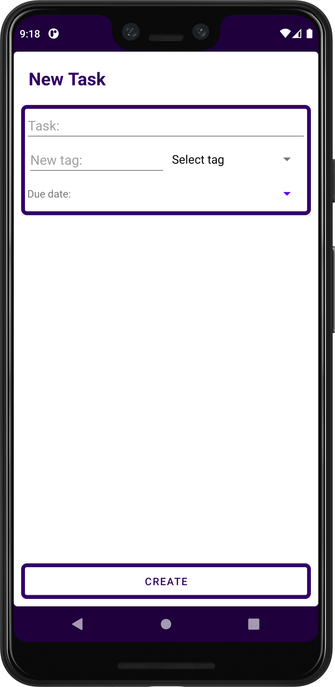
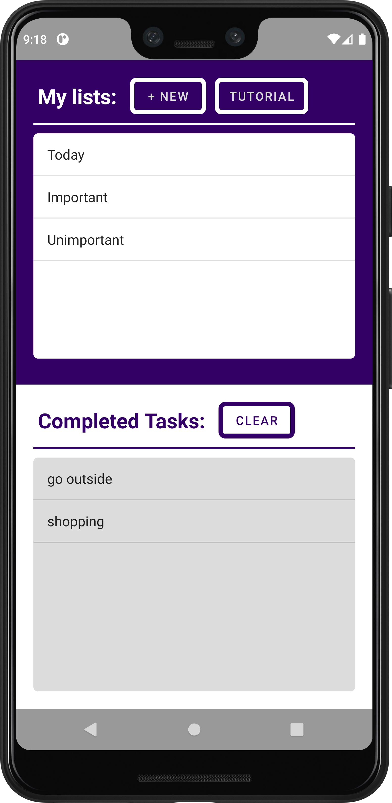
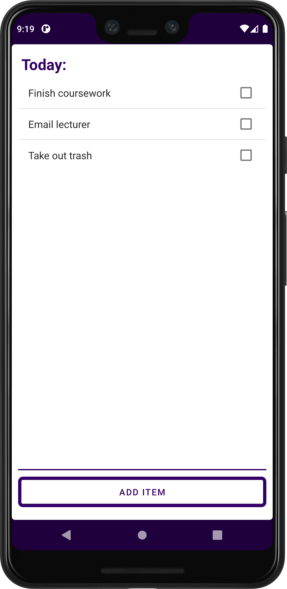
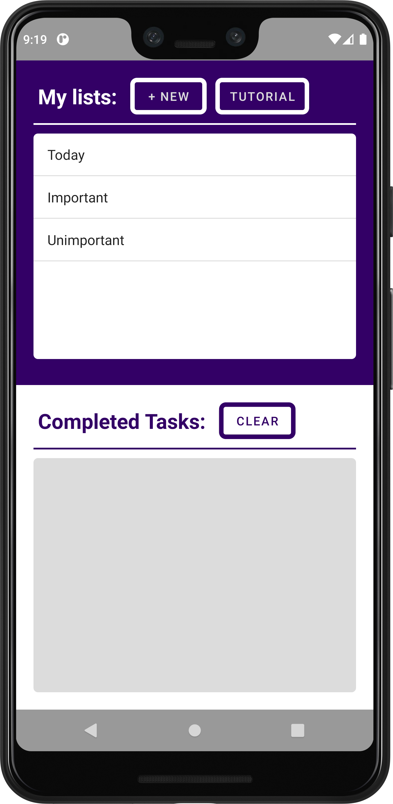

Tutorial
To create a new task, you can tap on the "+ NEW" button, this will take you to the "new task
page".
On the "new task page" you must enter:
The task name
Create a new tag or chose one of your pre existing tags from the dropdown
If you want to be reminded, you can select a due date which will send you a notification at 9am
on your chosen date.
Once you have entered the task details, tap on create to add the task to the list.
If you want to cancel, tap your device's back button to go to the previous screen.

On the main screen of the app you are shown 2 sections:
One for your uncompleted tasks.
One for your completed tasks.

The top half of the main screen shows your uncompleted tasks grouped by their tag. When you tap
on one of the tags a new page opens with a list of all tasks that have been assigned that tag.
At the top left of the new screen you can see the current tag.
Each task can be tapped to be marked as complete.
At the bottom of the screen there is a button which takes you to another page where you can add
an item with the current tag, or you can chose a different tag if you want.

When you mark a task as completed, that task will now be shown in the "completed tasks" segment
and not in the tasks screen.
You can tap the "CLEAR" button to delete all your completed tasks.

To access this tutorial again, either tap the tutorial button or swipe left on the main
screen